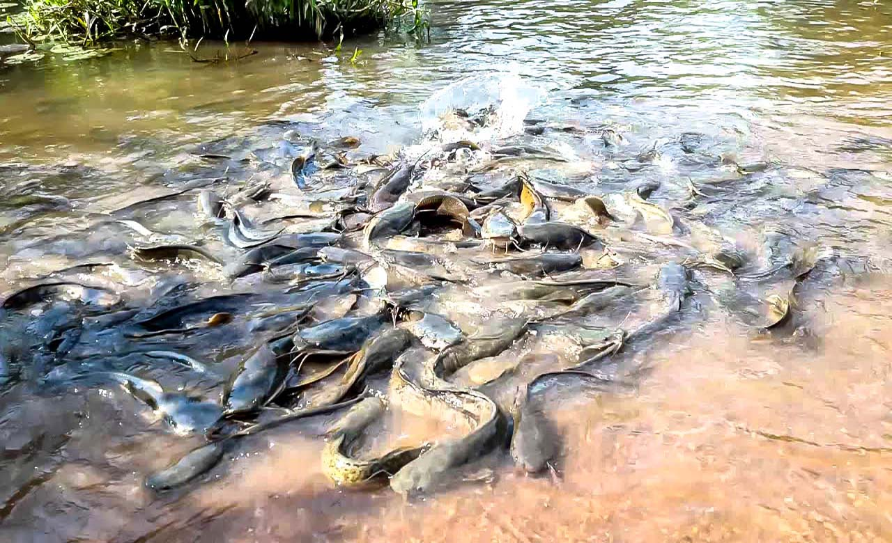
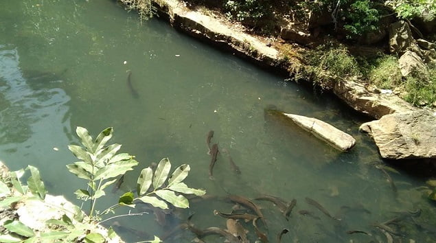

Au cœur de Bobo-Dioulasso, la capitale économique du Burkina Faso, se trouve la mare sacrée de Dafra, réputée pour ses silures géants, considérés comme les ancêtres du fondateur de Sya. Ce site unique est à la fois un lieu de culte mystique et un pôle touristique fascinant. Selon les croyances des Bobos mandare, ces poissons sacrés sont protégés et respectés : ils ne sont ni tués ni consommés. Certains silures atteignent des tailles impressionnantes, pesant jusqu’à 17 kg, ce qui renforce le caractère exceptionnel du lieu.
Les sillures sacrées de Dafra sont entourées de nombreuses légendes qui tentent d’expliquer leur origine. Selon certaines traditions orales, ces formations rocheuses auraient été créées par des esprits protecteurs pour abriter les âmes des ancêtres. D’autres récits évoquent des événements surnaturels, comme des batailles entre forces du bien et du mal, qui auraient laissé leur empreinte sur le paysage. Quoi qu’il en soit, le site est considéré comme sacré par les communautés locales, qui y voient un lien profond avec leurs racines spirituelles.
Dafra est empreint d’une aura magiqueLes visiteurs y viennent en quête de grâces ou de promotion sociale, s’adonnant à des rituels précis. Une fois leur vœu exaucé, ils reviennent avec des offrandes pour remercier les « poissons-génies ». Les tripes des animaux sacrifiés sont offertes aux silures lors de ces cérémonies, soulignant le lien spirituel profond entre les humains et ces créatures sacrées.
